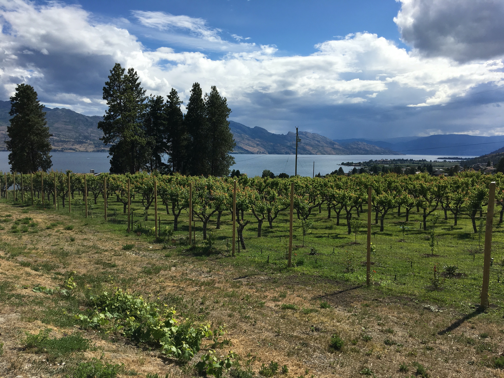

The Okanagan has been long known for its orchards and fresh produce. More recently, these orchards have become extensive vineyards producing some of the best wines in the world. It is important to us to keep fruit trees as part of the old Okanagan lifestyle alive.
